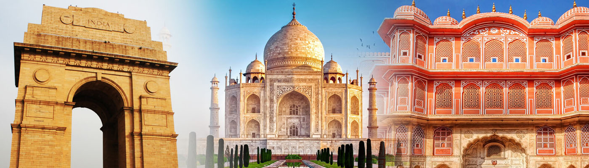
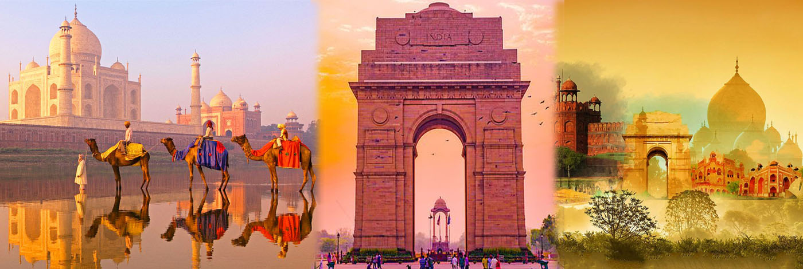
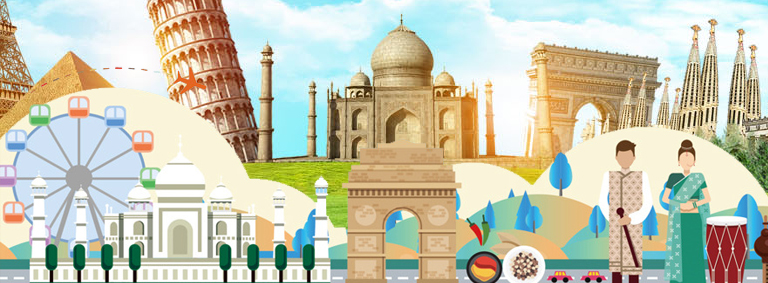

Home
Importance of Traveling
Traveling is a very crucial part of life as it is the best way to get out of the busy schedule. It is also to experience life in different ways .Traveling is actually a good remedy for stress, anxiety and depression. It also improves the mental and physical health. We only have one life and we should thank it for making us more advanced creature on this planet. Not only do we get to experience the beauty of nature, different geographies ,topographies, and people. Traveling is all about exploring new places, cultures, cuisines, rituals and styles of living. We also travel because distance and difference are the secret toxic of learning and creativity which one cannot observe by sitting at home. Traveling in itself has advantages, as it makes one forget his or her worries, problems, frustrations and fears. This helps by broadening your horizon to move in new directions, unplugging from the pulls and pushes of daily life. We have a passport to fill full of stamps rather than to have a house full of stuff. Let’s use this to make memories all over the world.
These are the 7 most reasons why traveling is important:-
1.The discovery of new cuisines
Traveling gives the perfect opportunity to try out new,exciting and authentic delicacies from different parts of the world. Introducing you to unique flavors which you have neither tasted nor heard off and leaving you startled .Traveling without experiencing the local food is not complete in anyway. We all love traveling, leaving our comfort zone, sightseeing, meeting new people and creating endless amount of unforgettable memories. Yet, the best part of all is the food. Traveling provides you with a wide range of authentic flavor that you would be missing out if you did not travel to different corners of the world.
2. Exploring new cultures
Culture often refers to the characteristics that are formed through language, history, geography,and family values. Learning about culture is enriching for the mind and soul. It can reinforce the whole experience and offer totally different perspectives. Discovering a new culture is learning something new which can be an exciting and thrilling experience that one cannot forget. Meanwhile let us not forget one is being exposed to different people , languages, cuisines, beliefs, traditions and customs. We can conclude that this can be a humbling and a learning experience that can become more social, flexible, open minded and independent .So if you have not done so yet, step out of your comfort zone and travel to experience a whole new world and its diversities.
3. Improving the health
Traveling undoubtedly is a best option for those who believe in leading a healthy life. Those who travel are less likely prone to health issues as they are more active. The benefit of traveling begins well before the trip does. Traveling includes physical activity which promotes heart health by lowering the blood pressure and even preventing a stroke. Traveling broaden your horizons and boost up brain health sharp, healthy and creative. It is been scientifically proven that traveling reduces stress levels. This can help detoxify all your negatives and makes you active both physically and mentally and leaving you feeling healthy and rejuvenated. During traveling you are endorsed to do things which you never thought you would do. Doing this just goes to improve and prove yourself how amazing you are.
4. Self Development
Traveling is one of the best way to enhance personal growth. It enables you to do things different from your daily routine activities. When you travel, you step out from your comfort zone to a different environment which makes you become more responsible and gives a sense of independence. Each journey brings something innovative which opens you to find your strengths, weakness, morals, values etc. This helps you to learn things about yourself, other people and other places. Sometimes traveling presents challenges and opportunities in such a way that makes you a stronger person leading to a better version of yourself. Traveling can also offer you an unparalleled opportunity to reinvent and discover who you really are.

5. Ensuring your inner peace
We all have a busy schedule and lifestyle which is confined to stress and tensions. These are all the hustle bustle of tedious urban life. Somewhere somehow we have lost our inner peace. Traveling is an ultimate remedy that let us unwind from our everyday routine and helps us experience peace in the lap of nature . This can involve from moving, exploring, wandering within different cultures, places help you to forget about the past by physically the end of the trip you will be more rejuvenated and spiritually. This will help detox all the stress and tensions.Traveling not only provides inner peace,it also expands your mind, broadens your views by sight seeing, discovering new places and meeting other peoples.
6. Provides practical education
Traveling indeed is the best form of education that couldn’t be learned by seeing television or by reading any book. Almost everyone of us agree that life’s real education happens outside our walls. Travel teaches us economy, history, geography, sociology and different life styles of people. This can range from their livelihood, culture and tradition. Bookish knowledge gives us only the theoretical concepts while traveling helps use gather wisdom by understanding about real life experiences and knowledge. So embrace and welcome the unfamiliar and the unexpected ,it will make your experience for travelling more enjoyable and more fulfilling .
7. Meeting new friends
Traveling enables us to build friendships and connections with people from various places across the world. Establishing connections and building a network overseas is one of the smartest thing you can do in today’s era. This can be such an enriching part of travel. We may meet with people for one day but we do appreciate these people for a lifetime whenever the memories are revived. Exploring a new place opens doors to establish new friendships and relationships that would have never been acquired without traveling .

